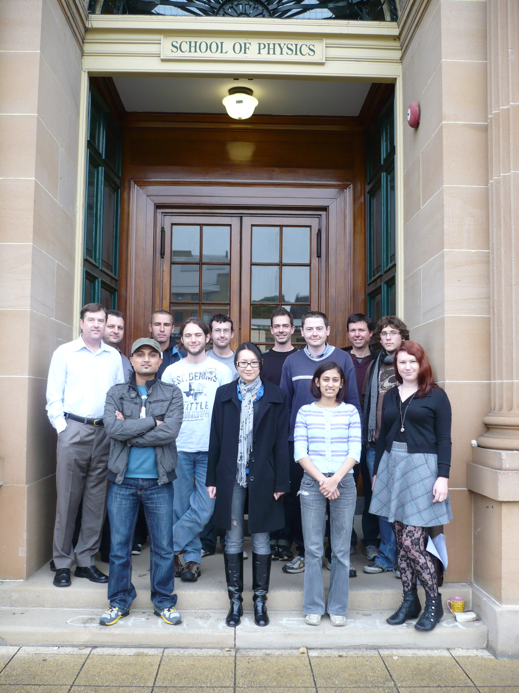

Visitor no.:

site editor : Prajwal Kafle
site comments: cci_at_physics_dot_usyd.edu.au
| Welcome to the Gravitational Astrophysics website. We are a research group within the Sydney Institute for Astronomy from the School of Physics at the University of Sydney, Australia. Our research activities range from galactic archaeology through gravitational lensing to cosmology... |
|
Many members of our group are
prominent players in the Commonwealth
Cosmology Initiative (CCI) |
 |